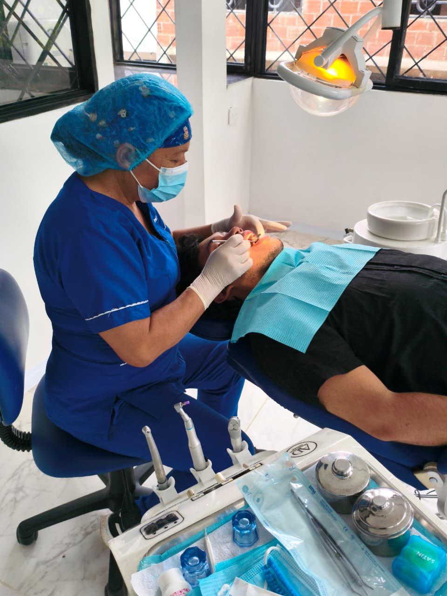
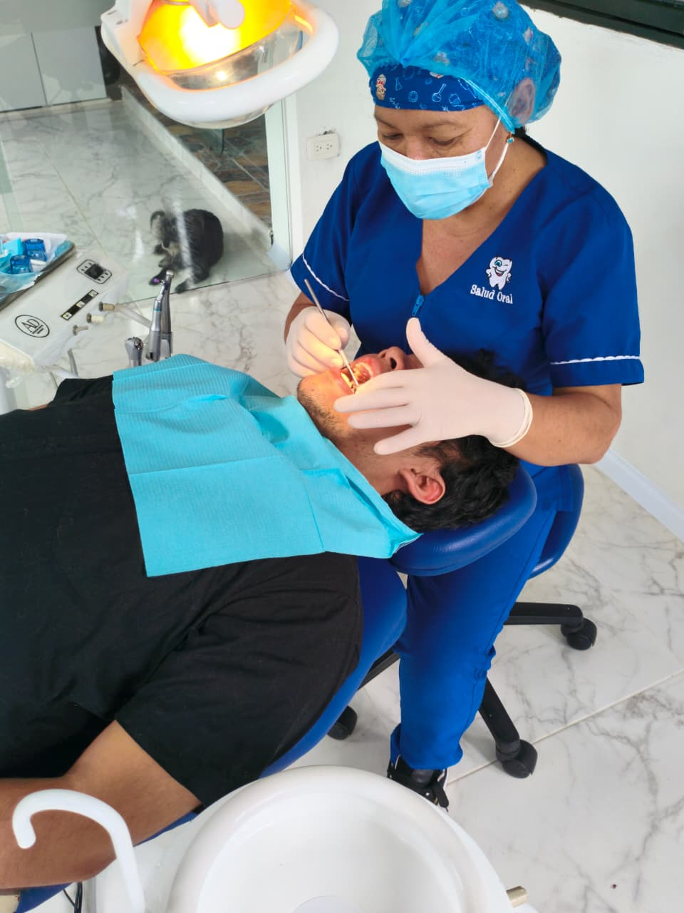
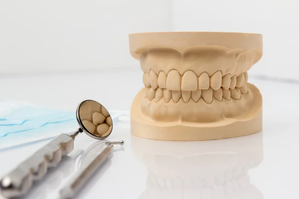
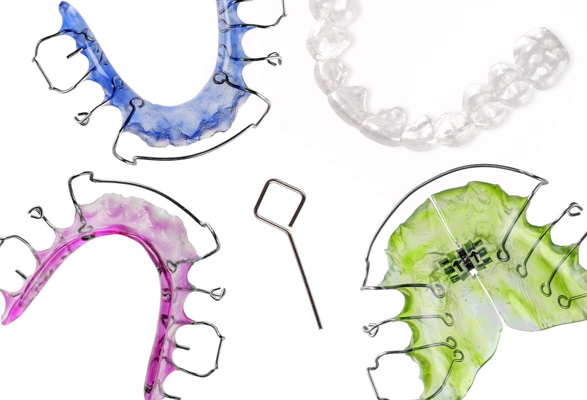

Odontología General
La funcionalidad principal de este servicio es la preservación estructural. Mediante el diagnóstico técnico avanzado, detectamos patologías en etapas tempranas. Realizamos restauraciones biomiméticas que devuelven la dureza y forma original al diente, evitando complicaciones futuras y manteniendo la salud de la cámara pulpar.

Ortodoncia
Buscamos la armonía oclusal. No solo alineamos piezas dentales; diseñamos una mordida funcional que distribuya correctamente las fuerzas masticatorias. Esto previene el desgaste óseo, reduce tensiones en la articulación temporomandibular y facilita una higiene óptima al corregir el apiñamiento severo.
Alineación · Función · Estética
.jpeg)
Higiene Oral
Nuestra profilaxis técnica actúa como un descontaminante biológico. Utilizamos tecnología ultrasónica para eliminar depósitos calcificados que causan inflamación gingival. Su funcionalidad es el mantenimiento del periodonto (encía y hueso), garantizando que la base de tu sonrisa permanezca sólida y libre de infecciones bacterianas.
- Limpieza Profunda
- Remoción de Manchas

Estética Dental
Especialidad enfocada en la restauración morfológica. Aplicamos principios de diseño de sonrisa para corregir asimetrías, tonalidades y formas. Mediante carillas o aclaramiento químico, logramos una integración visual perfecta con el rostro del paciente, priorizando siempre la naturalidad sobre la artificialidad.

Retenedores
Especialistas en el mantenimiento post-tratamiento. Diseñamos y ajustamos dispositivos de estabilización ortodóntica. Su funcionalidad principal es fijar las piezas dentales en su nueva posición, garantizando que tu sonrisa conserve los resultados geométricos logrados a lo largo del tiempo de manera permanente.
- Ajuste Personalizado
- Resultados Permanentes
